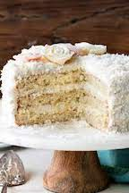

coconut cake
look, coconut cake is revolting, but if you want to dig deeper, i think its correct to say that most things flavored coconut are the same. coconut is just inconsistent, sometimes sweet, sometimes tasting weird, its just not right. coconut water is among on of the few coconut things that is even a little bit good. but with coconut cake? thats a flat out no. coconut cake is flaky, crumbly, dry, and of course, it tastes like coconut. it also takes an extremely long time to make.
"the name is self-explanatory. i mean, coconut cake. it's just...disgusting." - mira makan
but coconut cake isn't the worst dessert of all (if you would like to know my opinions on worse desserts than coconut cake, check out my banana pudding page). if cooked correctly and with affection and appreciation for the dessert, then if could possibly be good. still that is a very hard thing to do, because you need just the right texture, moisture level, and amount of coconut. nonetheless, it is better than banana pudding, and it has potential, so here's my rating:
3/10
............................................................................................................................................................................................................................
again, if you want to torture yourself and go throught the true agony of making/eating this dessert, heres a link to a said-to-be lovely coconut cake recipe: sally's baking addiction coconut cake
also, i do recommend sally's baking addiction for recipes of desserts. many times, the desserts are easy to make, and end up tasting delicious.
back to home